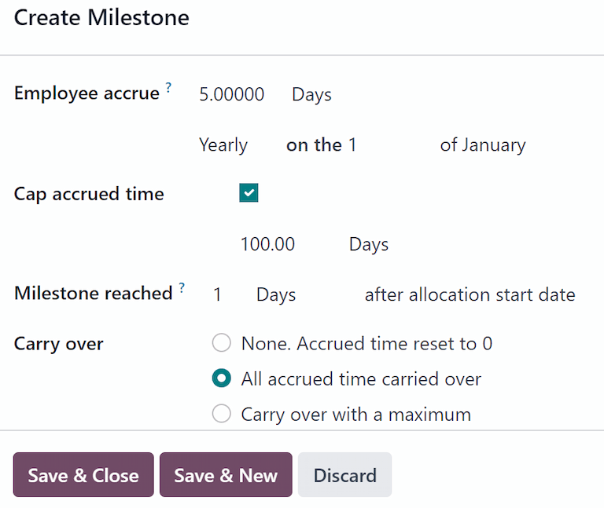

Time Off
Odoos Time Off application serves as a centralized hub for all time-off-related information. This application manages requests, balances, allocations, approvals, and reports.
Users can request time off, and see an overview of their requests and time off balances. Managers can allocate time off to individuals, teams, or the whole company, and approve time off requests.
Detailed reports can be run to see how much time off (and what kinds of time off) are being used, accrual plans can be created, and public holidays can be set.
Note
Be advised, only users with specific access rights can see all aspects of the Time Off app.
All users can access the My Time Off and Overview sections of the Time Off app. All other sections require specific access rights.
To better understand how access rights affect the Time Off app, refer to the New employees document, specifically the section about configuring the work information tab.
Configuration
In order to allocate time off to employees, and for employees to request and use their time off, the various time off types must be configured first, then allocated to employees (if allocation is required).
Time off types
To view the currently configured time off types, navigate to . The time off types are presented in a list view.
The Time Off app comes with four preconfigured time off types: Paid Time Off, Sick Time Off, Unpaid, and Compensatory Days. These can be modified to suit business needs, or used as-is.
Create time off type
To create a new time off type, navigate to . From here, click the New button to reveal a blank time off type form.
Enter the name for the particular type of time off in the blank line at the top of the form, such as
Sick Time or Vacation. Then, enter the following information on the form.
Note
The only required fields on the time off type form are the name of the Time Off Type, the Take Time Off In, and the Kind of Time Off. In addition, the Time Off Requests and Allocation Requests sections must be configured.
Time Off Requests section
Approval: select what specific kind of approval is required for the time off type. The options are:
No Validation: No approvals are required when requesting this type of time off. The time off request is automatically approved.
By Time Off Officer: Only the specified Time Off Officer, set on this form in the Notified Time Off Officer field, is required to approve the time off request. This option is selected, by default.
By Employees Approver: Only the employees specified approver for time off, which is set on the Work Information tab on the employees form, is required to approve the time off request.
By Employees Approver and Time Off Officer: Both the employees specified time off approver and the Time Off Officer are required to approve the time off request.
Allocation Requests section
Requires allocation: If the time off must be allocated to employees, select Yes. If the time off can be requested without time off being previously allocated, select No Limit. If No Limit is selected, the following options do not appear on the form.
Employee Requests: Select Extra Days Requests Allowed if the employee is able to request more time off than was allocated.
If employees should not be able to make requests for more time off than what was allocated, select the Not Allowed option.
Example
Ten days are allocated to the employee for this particular type of time off, and the Extra Days Requests Allowed option is enabled. The employee wants to take a vacation for twelve days. They may submit a request for two additional days, since the Extra Days Requests Allowed option is enabled.
Important
It is important to note that requesting additional time off does not guarantee that time off is granted.
Approval: Select the type of approvals required for the allocation of this particular time off type.
Approved by Time Off Officer indicates the Time Off Officer set on this form must approve the allocation.
No validation needed indicates that no approvals are required.
Configuration section
Notified Time Off Officer: Select the person who is notified and responsible for approving requests and allocations for this specific type of time off.
Take Time Off in: Select the format the time off is requested in from the drop-down menu.
The options are:
Day: if time off can only be requested in full day increments (8 hours).
Half Day: if time off can only be requested in half day increments (4 hours).
Hours: if the time off can be taken in hourly increments.
Deduct Extra Hours: Enable this option if the time off request should factor in any extra time accrued by the employee.
Example
If an employee works two extra hours for the week, and requests five hours of time off, the request would be for three hours, since the two extra worked hours are used first, and deducted from the request.
Allow To Attach Supporting Document: Enable this option to allow the employee to attach documents to the time off request. This is useful in situations where documentation is required, such as long-term medical leave.
Kind of Time Off: From the drop-down menu, select the type of time off, either Worked Time or Absence. Worked Time indicates the time off taken counts toward worked time for any type of accrual the employee is working towards, whereas Absence does not count toward any type of accrual.
Company: If multiple companies are created in the database, and this time off type only applies to one company, select the company from the drop-down menu. If this field is left blank, the time off type applies to all companies in the database. This field only appears in a multi-company database.
Negative Cap section
Enable the Allow Negative Cap option if employees are able to request more time off than they currently have, allowing a negative balance. If enabled, an Amount in Negative field appears. In this field, enter the maximum amount of negative time allowed, in days.
Example
Sara currently has three days of the time off type Vacation. She is planning a trip that
requires five days of time off.
The Vacation time off type has the Allow Negative Cap option enabled, and the
Amount in Negative is set to five.
These settings allow Sara to submit a request for five days of the Vacation time off type. If
approved, her Vacation time off balance will be negative two (-2) days.
Payroll section
If the time off type should create Work entries in the Payroll app, select the Work Entry Type from the drop-down list.
Timesheets section
Note
The Timesheets section only appears if the user is in developer mode. Refer to the developer-mode document for details on how to access the developer mode.
When an employee takes time off, and is also using timesheets, Odoo creates entries in the Timesheets app for the time off. This section defines how they are entered.
Project: Select the project the time off type entries appear in.
Task: Select the task that appears in the timesheet for this time off type. The default options are: Time Off, Meeting, or Training.
Display Option section
Color: Select a color to be used in the Time Off app dashboard.
Cover Image: Select an icon to be used in the Time Off app dashboard.

Accrual plans
Some time off is earned through an accrual plan, meaning that for every specified amount of time an employee works (hour, day, week, etc), they earn or accrue a specified amount of time off.
Example
If an employee accrues a vacation day for every week they work, they would earn 0.2 vacation days for each hour they work. At the end of a forty hour work week, they would earn one whole vacation day (8 hours).
Create accrual plan
To create a new accrual plan, navigate to . Then, click the New button, which reveals a blank accrual plan form.
Enter the following information on the form:
Name: Enter the accrual plan name.
Accrued Gain Time: Select when the employee begins to accrue time off, either At the start of the accrual period or At the end of the accrual period.
Carry-Over Time: Select when the employee received previously earned time. The options are:
At the start of the year: Select this if the accrual rolls over on January 1 of the upcoming year.
At the allocation date: Select this if the accrual rolls over as soon as time is allocated to the employee.
Other: Select this option if neither of the other two options are applicable. When selected, a Carry-Over Date field appears. Select the date using the two drop-down menus, one for the day and one for the month.
Based on worked time: Enable this option if time off accrual is determined by the employees worked hours. Days not considered as worked time do not contribute to the accrual plan in Odoo.
Example
An employee is granted time off from an accrual plan configured to accrue one day of vacation for every five days worked. The accrual plan is based on the employees worked time (the Based on worked time checkbox is ticked).
The employee works standard 40-hour weeks. According to the accrual plan, they should earn four vacation days per month.
The employee takes five days off. The time off type the employee has taken has the Kind of Time Off configured as an Absence.
Since the accrual plan only grants time off based on the worked time, the employee does not accrue a vacation day for the five days of time off that is considered an absence.
At the end of the month, the employee accrues only three days, instead of four.
Milestone Transition: This field is only visible after a minimum of two rules have been configured on the accrual plan. This selection determines when employees move up to a new milestone. If they qualify to change milestones in the middle of a pay period, decide whether the employee changes milestones Immediately or After this accruals period (after the current pay period).
Company: This field only appears in a multi-company database. Using the drop-down menu, select the company the accrual plan applies to. If left blank, the accrual plan can be used for all companies.

Rules
Rules must be created in order for employees to accrue time off from the accrual plan.
To create a new rule, click the New Milestone button in the gray Rules section, and a Create Milestone modal form appears.
Fill out the following fields on the form:
Employee accrue: Select the parameters for earned time off in this section.
First, select either Days or Hours for the increment of accrued time using the drop-down menu.
Next, enter the numerical amount of the selected parameter that is accrued. The numerical format is
X.XXXX, so that partial days or hours can also be configured.Last, select how often the time is accrued using the drop-down menu. The default options are Hourly, Daily, Weekly, Twice a month, Monthly, Twice a year, and Yearly.
Depending on which option is selected, additional fields may appear. For example, if Twice a month is selected, two additional fields appear, to specify the two days of each month the milestone occurs.
Cap accrued time: If there is a maximum amount of days the employee can accrue with this plan, enable this option.
When enabled, two additional fields appear beneath it. Select the type of time period from the drop-down menu, either Days or Hours.
Then, enter a numerical value in the field to specify the maximum amount of time that can be accrued.
Milestone reached: Enter the number and value of the time period that must pass before the employee starts to accumulate time off. The first value is numerical; enter a number in the first field.
Then, select the type of time period using the drop-down menu in the second field. The options are: Days, Months, or Years.
Carry over: select how any unused time off is handled. The options are either:
None. Accrued time reset to 0: Any unused time off is gone.
All accrued time carried over: All unused time off is rolled over to the next calendar year.
Carry over with a maximum: Unused time off is rolled over to the next calendar year, but there is a cap. An Up to field appears if this is selected. Enter the maximum number of Days that can roll over to the following year. Any time off beyond this parameter is lost.
Important
If the Carry over field is set to None. Accrued time reset to 0, that rule overrides the Carry-Over Time set on the accrual plan.
If a company creates an accrual plan, granting employees time off At the start of the accrual period (i.e., the beginning of the year), and sets the Carry-Over Time on the accrual plan to At the start of the year, it allows unused vacation time to rollover to the following year.
Then, the company adds rules to the accrual plan, allocating five days of vacation, annually, on the first of the year (one week of vacation allocated on January 1st).
If the Carry over field is set to None. Accrual time reset to 0 on the Create Milestone pop-up for, any unused vacation time does not carry over, even though on the Accrual Plan form, the Carry-Over Time is set to At the start of the year.
The carry over set on the rule takes precedence over the carry over set on the accrual plan form.
Once the form is completed, click Save & Close to save the Create Milestone form, and close the modal, or click Save & New to save the form and create another milestone. Add as many milestones as desired.
Public holidays
To observe public or national holidays, and provide extra days off as holidays to employees, configure the observed public holidays in Odoo.
It is important to configure these days in Odoo, so employees are aware of the days they have off, and do not request time off on days that are already set as a public holiday (non-working days).
Additionally, all public holidays configured in the Time Off app are also reflected in any app that uses working schedules, such as Calendar, Planning, Manufacturing, and more.
Due to Odoos integration with other apps that use working schedules, it is considered best practice to ensure all public holidays are configured.
Create public holiday
To create a public holiday, navigate to .
All currently configured public holidays appear in a list view.
Click the New button, and a new line appears at the bottom of the list.
Enter the following information on that new line:
Name: Enter the name of the holiday.
Company: If in a multi-company database, the current company populates this field by default. It is not possible to edit this field.
Note
The Company field is hidden, by default. To view this field, click the (additional options) icon in the top-right corner of the list, to the far-right of the column titles, and activate the Company selection from the drop-down menu that appears.
Start Date: Using the date and time picker, select the date and time the holiday starts, then click Apply. By default, this field is configured for the current date. The start time is set according to the start time for the company (according to the working schedules). If the users computer is set to a different time zone, the start time is adjusted according, compared to the companys time zone.
End Date: Using the date and time picker, select the date and time the holiday ends, then click Apply. By default, this field is configured for the current date, and the time is set to the end time for the company (according to the working schedules). If the users computer is set to a different time zone, the start time is adjusted accordingly, compared to the companys time zone.
Example
A company located in San Francisco operates from 9:00 AM - 6:00 PM, with an eight hour work day and one hour lunch break.
For a user in New York, with a computer time zone set to Eastern Standard Time, a created public holiday displays a start time of 12:00 PM - 9:00 PM, accounting for the three hour time zone difference.
Similarly, a user located in Los Angeles, with a computer time zone set to Pacific Standard Time, sees a public holiday time as 9:00 AM - 6:00 PM.
Working Hours: If the holiday should only apply to employees who have a specific set of working hours, select the working hours from the drop-down menu. If left blank, the holiday applies to all employees.
Work Entry Type: If using the Payroll app, this field defines how the work entries for the holiday appear. Select the work entry type from the drop-down menu.

Mandatory days
Some companies have special days where specific departments, or the entire staff, is required to be present, and time off is not allowed on those specific days.
These types of days are called mandatory days in Odoo. These can be configured to be company-wide, or department specific. When configured, employees in the specified department or company are unable to submit time off requests for these mandatory days.
Create mandatory days
No mandatory days are configured in Odoo by default. To create a mandatory day, navigate to .
Click the New button in the top-left corner, and a blank line appears in the list.
Enter the following information on that new line:
Name: Enter the name of the mandatory day.
Company: If in a multi-company database, this field is visible, and the current company populates this field, by default. Using the drop-down menu, select the company the mandatory day is for.
Departments: This column is hidden by default. First, click the (additional options) icon in the top-right corner, next to Color, and then tick the checkbox next to Departments to reveal that column.
Next, select the desired departments from the drop-down menu. Multiple departments can be selected, and there is no limit to the amount of departments that can be added.
If this field is left blank, the mandatory day applies to the entire company.
Start Date: Using the calendar picker, select the date the mandatory day starts.
End Date: Using the calendar picker, select the date the mandatory day ends. If creating a single mandatory day, the end date should be the same as the start date.
Color: If desired, select a color from the available presented options. If no color is desired, select the
No coloroption, represented by a white box with a red line diagonally across it. The selected color appears on the main Time Off app dashboard, in both the calendar and in the legend.

Overview
To view a color-coded schedule of the users time off, and/or of the team managed by them, navigate
to . This presents a calendar with the default filter of
My Team, in a month view.
To change the time period displayed, click on the Month button to reveal a drop-down menu. Then, select either Day, Week, or Year to present the calendar in that corresponding view.
To navigate forward or backward in time, in the selected increment (Month, Week, etc.), click the (left arrow) or (right arrow) to move either forward or backward in that specified amount of time.
For example, if Month is selected, the arrows adjust the view by one month.
To return to a view containing the current day, click the Today button at any time.
Team members are listed alphabetically on individual lines, and their requested time off, regardless of the status (validated or to approve), is visible on the calendar.
Each employee is color-coded. The employees color is selected at random, and does not correspond to the type of time off they requested.
The status of the time off is represented by the color detail of the request, either appearing solid (validated) or striped (to approve).
The number of days or hours requested is written on the request (if there is enough space).
At the bottom of the calendar, in the Total line, a bar graph shows how many people are projected to be out on any given day. The number on each individual bar represents the number of employees out for those highlighted days.
Click on a time off entry to view the details for the specific time off entry. The total number of hours or days are listed, along with the start and end time of the time off. To view the details of the time off request in a modal, click the View button.

Reporting
The reporting feature allows users to view time off for their team, either by employee or type of time off. This allows users to see which employees are taking time off, how much time off they are taking, and what time off types are being used.
Any report can be added to a spreadsheet, when in either the (Graph) or (Pivot) view, through the Insert in Spreadsheet button that appears in the top-left of the report.
Note
If the Documents app is installed, an option to add the report to a spreadsheet appears. If not, the report can be added to a Dashboard.
By employee
To view a report of employee time off requests, navigate to .
The default report presents the current years data in a list view, displaying all the employees in alphabetical order. Each employees line is collapsed by default. To expand a line, click anywhere on the line.
The view expands, and has the time off requests organized by time off type. Click anywhere on a time off type line to expand it, and view all the individual time off requests that fall under that type.
The information shown in the list includes: the Employee name, Number of Days off requested, the Start Date, End Date, Status, and Description.

The report can be displayed in other ways, as well. Click the corresponding button option in the top-right corner of the page to view the data in that specific way. The various options are a (List), or default view, (Graph), (Pivot) table, or (Calendar) view.
When a selection has been made, additional options appear for that particular selection. For more detailed information on the reports and their various options, refer to the reporting documentation.
By type
To view a list of all time off, organized by time off type, navigate to . This shows all time off requests in a default bar chart.
Hover over a bar to view the Duration (Days) of that specific time off type.

Click on a bar to go to a detailed list view of all the time off requests for that time off type.
Each request is listed, with the following information displayed: the Employee, Number of Days, Request Type, Start Date, End Date, Status, and the Description.
The report can be displayed in other ways, as well. Click the corresponding button option in the top-right corner of the page to view the data in that way. The various options are a (Graph) (the default view), (List), or (Pivot) table.
When a selection has been made, additional options appear for that particular selection. For more detailed information on the reports, and their various options, refer to the reporting documentation.
See also